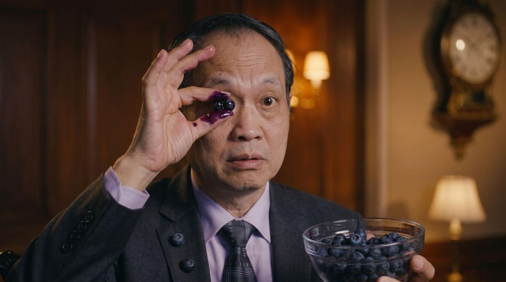

Many patients over 50 are now insisting they never needed surgery, eye injections, or stronger and stronger glasses.
Instead, they claim their real secret is something conventional medicine has ignored for decades: a little-known "Wild Nordic Blueberry" that regenerates the visual repair stem cells — the only defense that protects every delicate structure inside your eyes.
But is that really true?
And more importantly… could this simple frozen fruit explain why so many adults over 50 are suddenly recovering years of lost vision without surgery or expensive eye drops — while billions of dollars spent on glasses, intraocular injections, and laser surgeries keep failing to fix anything?
That's exactly what an independent investigation set out to find out.
Over the past few months, the so-called Blueberry Trick has been gaining attention across America, especially among adults who say it helped them "rebuild from the inside out" the eye tissues being destroyed by screen radiation — restoring the sharp vision they thought was gone forever.
The buzz became even bigger after Dr. Ming Wang, a world-renowned ophthalmologist with 14 years of experience and author of the Amazon bestseller "From Darkness to Sight", agreed to an exclusive interview with Health Report.
Dr. Wang says he has already helped more than 24,000 patients recover their vision using this exact method — without surgery, without injections, and without spending fortunes on the same treatments this investigation has just exposed as temporary fixes.
During the interview, Dr. Wang shocked the audience by revealing:
Interviewer: Good evening, Dr. Wang. Thank you for being here.
This week, we received hundreds of messages from people saying they saw posts claiming adults over 50 are restoring their vision with the so-called 'Blueberry Trick.'
You are the doctor behind this discovery. Is that true — or is it overblown?
Dr. Ming Wang: Look, I'm going to be completely honest with you.
I spent 14 years of my career doing exactly what conventional medicine tells you to do: prescribing stronger and stronger glasses, writing scripts for eye drops, referring patients for intraocular injections, surgeries… the full package.
And even so, more often than not, nothing seemed to truly solve the problem.
Until one night, while I was desperately researching a solution for my own father, who was losing his vision, I found information that made me question everything I had learned in 14 years of practice.
I started investigating a different possibility: was the problem simply the eye aging? Was it only genetics? Was it just "getting older"?
The more I researched, the more I found discussions about something that usually doesn't get enough attention: constant exposure to screen light — phones, TVs, tablets, and computers — and the effects it can have on the eyes.
That's when I started to better understand the role of the cells responsible for maintaining and regenerating eye tissue.
Think of them as a maintenance crew.
When something gets damaged, the body needs mechanisms to repair that tissue. And when those mechanisms don't work properly, different structures of the eyes can end up being affected.
That's when a lot of things started making sense to me.
The blurry vision. The dark spots. The floaters. The difficulty seeing fine details. The loss of visual quality.
And one of the things that bothered me the most was realizing that correcting someone's prescription with glasses does not necessarily treat the root cause of an eye problem. Glasses can improve the image you see — but they don't, by themselves, fix the internal health of your eyes.
It's like putting a new lens on a camera that has another problem inside.
The image may look sharper — but that doesn't mean the camera's problem went away.
That's when I started looking for other possibilities.
And during that investigation, I found reports and documents talking about a specific frozen fruit and a preservation process that, according to those claims, could support eye health.
I thought: "This is too good to be true."
But after watching my own father lose more and more of his vision, I was willing to investigate any possibility that might help him.
And today, what moves me the most is seeing my father once again doing things I thought he would never be able to do.
Driving his 1970 Mustang, reading bedtime stories to my daughter, and playing golf with his friends.
That's why this discovery completely changed the way I look at eye health.
Interviewer: That's incredible! Tell us, Dr. Wang — what was the process like with your father, and what happens inside the eyes?
Dr. Ming Wang: Honestly, even I was a little skeptical at first.
My father had already tried everything. Injections inside the eye every two weeks — a needle straight into the eye… Thicker and thicker glasses, expensive eye drops, appointments with the best specialists.
And even so, nothing seemed to stop the vision loss. On the contrary — his vision only got worse.
But then, after a few weeks on the Blueberry Trick, I started to notice a change. That constant blurriness he had suffered from for years because of severe macular degeneration began to fade.

Interviewer: Can anyone try this at home — and get results like Dr. Wang's father?
Dr. Ming Wang: Look, what we discovered is that there are three natural ingredients working together. And the most impressive part is that most people have never heard of the right combination.
I didn't know either.
I spent 14 years prescribing the same temporary treatments to thousands of patients. And no one ever taught me that, behind vision loss, there was a process happening inside the eyes.
That those repair cells were being destroyed.
And that there was research — kept in military documents for decades — on ways to stimulate the regeneration of those cells.
The first ingredient is the wild Nordic blueberry. And I'm not talking about the common blueberry you find at the grocery store.
It's a rare variety that grows in the Arctic tundra, in temperatures as low as 31 degrees below zero Fahrenheit.
This fruit is naturally rich in anthocyanins. And according to the formula we studied, when the extract is prepared in a specific way to preserve its compounds, those substances can help support the cells responsible for maintaining vision.
That's what caught our attention.
When my father started using the formula, he began noticing changes in his daily routine.
That constant blurriness that bothered him all the time? It started to fade.
The dark spots in the center of his vision that showed up from time to time? They seemed less intense.
And the difficulty seeing at night — which had made him stop driving? That improved gradually too.
After so many years watching his vision get worse, it was the first time we felt the situation had truly changed.
Today, my father is 78 years old and still uses the formula every morning after coffee.
And look — we had already tried everything the doctors had offered.
If I could go back in time, I would have researched this much earlier.
Before spending a fortune on treatments that only tried to control the problem.
Before accepting stronger and stronger lenses just to compensate for the difficulty of seeing.
And before watching my father go through repeated procedures that, for him, were extremely draining.
That's why we recorded a short presentation explaining exactly how the so-called Blueberry Method works, what the three ingredients in the formula are, and how they were combined.
We also show the amount used and the best time to take it.
If you want to understand how this combination works, watch the presentation while it's still available.